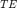
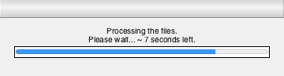
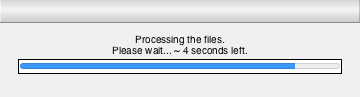
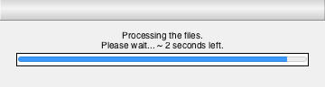
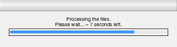
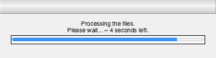
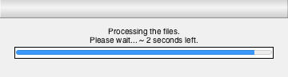

Contents
function [ properties ] = processFiles( file_names, file_path, white_matter_index, echo_time__TE )
%PROCESSFILES Summary of this function goes here % Detailed explanation goes here
Constants
RELATED_FILES = uint8(2); % One logical, and one 4D.
Regular Expressions
Display the regex args to the user; mainly for information. They are explicitly advised not to modify it.
input_msg = sprintf(['\nDo NOT modify this unless you are absolutely sure ' ... 'about what you''re doing, or you will get errors or ' ... 'unexpected outputs.\n\nExpressions must start with ' ... '"(?:s|S)". The arrangement of data and gender args ' ... 'must not not be changed.\n\nFor more info on regex ' ... 'args, visit: http://regexr.com/\n']); % Default regex. expression = '^(?:s|S)(\d+)(?:-)([mMfF])(\d+)(?:-)(?:.)\w+'; % regex. new_expression = inputdlg(input_msg, 'Regex args', [1 150], {expression}); snapnow; waitfor(new_expression); % In case it is modified for some reason, new regex. if ~strcmp(expression, new_expression) expression = new_expression; end
Calculate the logistics
sorted_names = sort(file_names); % File names alphabetically sorted. total_files = numel(file_names); % Total number of file selected. % Seriously, you won't be using more than the capacity of |uint16| number of % files with this function, unless you are using parallel computing, in which % case you will have to change |for| to |parfor| in this function. You can then % change the capacity too! if not(uint16(rem(total_files, RELATED_FILES))) % Total number of subjects. total_subjects = uint16(numel(file_names)/RELATED_FILES); else % Gotcha! ;) error(['Input Error:\n An even number of files with bilateral '... 'relations must be selected.']); end
Initialise the progress bar
loop_time = 0; msg_unstruct = 'Processing the files.\nPlease wait... ~ %0.0f seconds left.'; progress_msg = sprintf(msg_unstruct, loop_time); progress_bar = waitbar(0, progress_msg); uistack(progress_bar, 'top');
Initialise the output structure
Initialising a struct that will contain the data.
properties = struct(); % Initialisation of the cells in the struct. % Unique params. %---------------- properties.file_names = cell(RELATED_FILES, total_subjects); % filepath. properties.study_number = cell(1, total_subjects); % Study number. properties.sex = cell(1, total_subjects); % Gender. properties.gab = cell(1, total_subjects); % GAB. properties.segment_vol = cell(1, total_subjects); % Segment volume. properties.t2_average = cell(1, total_subjects); % Average T2. % Universal params. %----------------------------- properties.time_length = NaN; % Total timeframes. properties.total_files = total_files; % Total number of files read. properties.total_subjects = total_files / 2; % Two files for each subject.
Preliminary calculation
Reading the NifTi files and conducting the preliminary calculations, including the average T2 and segment volume.
tic;
for index=1:total_files
% File name. name = sorted_names{index}; try % To handle possible error. Further explanations in |catch|.
% Extracting data from file names using regular expressions |regexp|. matched_args = regexp(name, expression, 'tokens');
Label or 4D
Check whether the file being read is a label of segments or a 4 dimensional image.
Labels
if not(isempty(strfind(name, 'label'))) % Labels (bin file)
% File number (rounded to the next integer). cell_index = ceil(index/RELATED_FILES); % Subject's file name stored. properties.file_names{1, cell_index} = name; % Subject's study number stored. properties.study_number{cell_index} = ... uint16(str2double(matched_args{1}{1})); % Subject's gender stored. properties.sex{cell_index} = matched_args{1}{2}; % Subject's GAB stored. properties.gab{cell_index} = uint8(str2double(matched_args{1}{3})); % NifTi file read. nii_logical = nii_read(strcat(file_path, name)); % Logical mask created to extract the segment. nii_logical = nii_logical == white_matter_index; % Subject's segment_volume stored. properties.segment_vol{cell_index} = sum(nii_logical(:));
TE (Echo time)
If given as an input argument, the echo time , is confirmed with the user. If not; the user will be asked to produce one, the maximum is physically restricted to the maximum timeframes available in the file. This occures only if property.time_length = NaN, typically during the first or second iteration (depending on where the first one is the 4D file or mask.
Note: echo_time__TE must exist before T2Map can be called.
if isnan(properties.time_length) && exist('echo_time__TE', 'var') % 4D total timeframes. properties.time_length = size(nii_4d, 4); % Confirmation requested from the user. properties.echo_time__TE = ... getTE(properties.time_length, echo_time__TE); tic; elseif isnan(properties.time_length) && ... ~exist('echo_time__TE', 'var') % 4D total timeframes. properties.time_length = size(nii_4d, 4); % User asked to enter TE values. properties.echo_time__TE = getTE(time_length); tic; end % test(echo_time__TE).
T2 values have been retrieved and will be passed onto the T2Map function.
If the last value (optional argument) passed to the T2Map function is not false (note that the default value is true), a T2 regression plot is created. You don't want that to happen in a loop.
t2_val = T2Map(properties.echo_time__TE, nii_4d, ... nii_logical, false); % Subject's average T2 value stored. properties.t2_average{cell_index} = mean(t2_val(~isnan(t2_val))); continue;
Files were processed in 30.80 seconds.
Results: =
file_names: {2x70 cell}
study_number: {1x70 cell}
sex: {1x70 cell}
gab: {1x70 cell}
segment_vol: {1x70 cell}
t2_average: {1x70 cell}
time_length: 10
total_files: 140
total_subjects: 70
echo_time__TE: [13 16 20 25 30 40 50 85 100 150]
4 Dimensional.
elseif not(isempty(strfind(name, 'qt2'))) % qt2 (4D file) % Subject's file name is stored. properties.file_names{2, ceil(index/RELATED_FILES)} = name; % Read the NifTi mask. nii_4d = nii_read(strcat(file_path, name)); end % if (label or qt2)
Error Handling
In case a Runtime error occures whilst handling the files. Such an error will most like be caused by a corrupt file or one that is already open elsewhere.
catch exception error_msg = ... [sprintf(['Runtime Error:\n', ... ' An error was encountered when processing the file '... 'entitled <%s>.' ... 'This is most probably caused by an I/O error; that ' ... 'is, corrupt file, or one that is alreadt in use ' ... 'elsewhere.\n\nThe application is terminated.\n\n'], ... name), ... exception.identifier, ': ', exception.message]; error(error_msg); end % try
Progress bar value
Calculating the arguments for the progress bar.
if rem(single(index), 10) == 1 % Update remaining time once every 10 iters. ind = single(index); % Time remaining. loop_time = (toc/ind)*(total_files-ind+1); % Generating the text with the updated waiting time. progress_msg = sprintf(msg_unstruct, loop_time); % Update the progress bar. waitbar(single(index)/single(total_files), progress_bar, progress_msg); else % Only update the progress during every other iter. waitbar(single(index)/single(total_files), progress_bar, progress_msg); end % if (progress bar value)

   
   end % for (total_files) % Finished processing the files. fprintf(sprintf('\n\nFiles were processed in %0.2f seconds.\n\n', toc)); % Progress bar ... no more! delete(progress_bar); display(properties, 'Results: ');
end % function
The programme was terminated by the user.